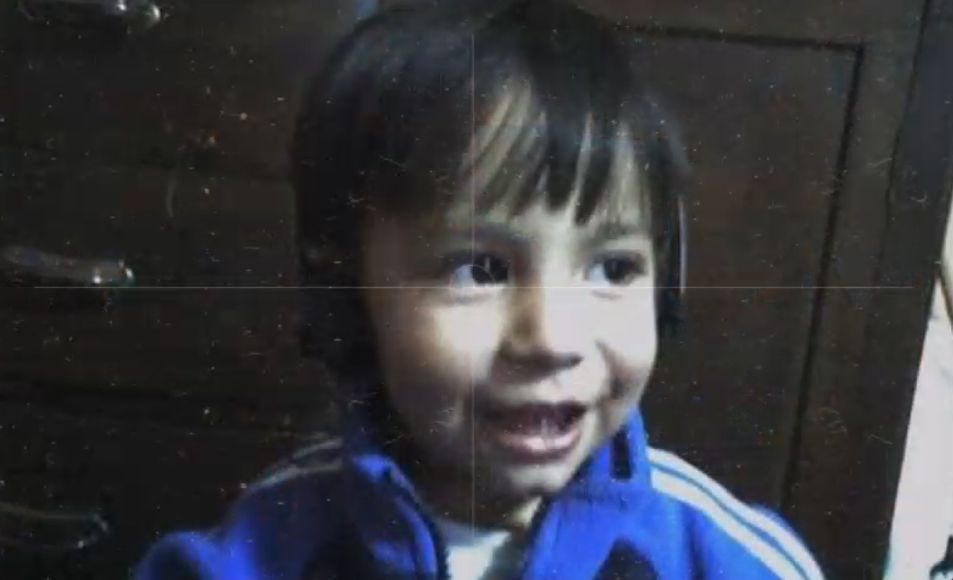

Hooolas, me llamo Kelvin Andree y nací el 10 de Octubre del 2004 en Arequipa. Tengo 20 años, actualmente soy un estudiante de la carrera de Administracion de Negocios de la Universidad Catolica San Pablo, hice mi primaria y secundaria en el colegio San Juan Bautista de La Salle. Soy una persona optimista y realista en algunas ocasiones, soy insistente, bastante racional en cuanto a decisiones y me gusta apoyar a gente que me importa o que quiero de mi entorno. Actualmente estoy llevando el curso de Introduccion a Ciencia de la Computacion, con el Profesor Ernesto Cuadros.
Uno de mis mayores pasatiempos es escuchar musica, ya que me encanta hacerlo y creo que es algo que no podria dejar de hacerlo, me gusta tambien jugar videojuegos con amigos, salir y tener una buena charla profunda lo aprecio bastante,un pasatiempo perdido es que solia dibujar cualquier tipo de cosa que me parecia interesante.
Victor Hugo
GMAIL: kelvin.caya@ucsp.edu.pe
Contacto